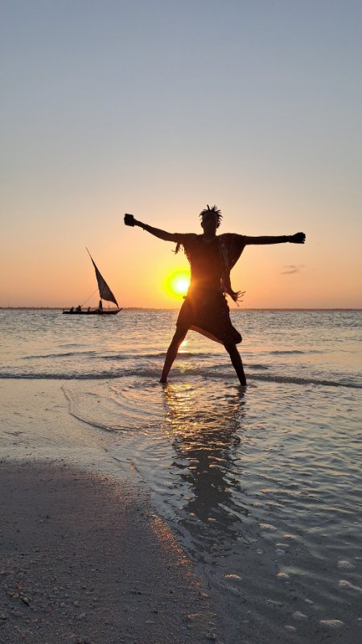

.jpg)
Za Masaie na Zanzibaru su mi rekli da nisu pravi. Da su fejk. Da ih zovu plastični Masai. Da su beach boys i da nemaju nikakve veze sa pravim Masaima.
Videla sam Masaie i na kopnu. I znate kako mi se čini? Kao da posmatrate kod nas ljude na selu koji se bave poljoprivredom, gaje goveda, peku rakiju i čija deca odu u grad da studiraju. Da li biste za naše studente rekli da nisu pravi pripadnici svog naroda? Oni samo ne žive tradicionalnim načinom života svojih predaka.
I ovi Masai na plažama Zanzibara, obučeni u tradicionalne crvene marame, rođeni su kao pravi Masai. Neki od njih imaju kružne ožiljke na obrazima, znak pripadnosti plemenu, hrabrosti i lepote. Mogu se videti i oni kojima nedostaje jedna ili obe donje jedinice zuba - tradicija koja je omogućavala davanje mleka ili leka obolelima koji nisu mogli da otvore usta. Njihovi roditelji još uvek žive na tradicionalan način, čuvajući svoju stoku. Ne uzgajaju biljke. Jedu uglavnom meso, mleko i med. Njihova deca su otišla u potragu za boljim životom.
Ne prose. Imaju mobilne telefone i jedu ribu. Zabavljaju turiste, slikaju se sa njima, a zauzvrat ih zamole da ih podrže kupovinom narukvica od perli ili rezbarenih drvenarija. Budu tu dok je vrh sezone, četiri meseca, pa se vraćaju kući. Cilj im je da zarade za kravu da bi mogli da se ožene. Mladinom ocu daju kravu da bi dobili ženu. Vrlo tradicionalno, zar ne? Krava košta od 500 dolara pa naviše.
Ima ih koji traže i starije usamljene gospođe koje bi ih ili plaćale za iluziju ljubavi ili spasile i odvele. Da li sam imala nepristojnih ponuda na Zanzibaru kao starija gospođa? Ne. Zapamte vam ime pa vam se horski javljaju. Dovikuju: „All good? Today good?“
Ako bi mi se pri rukovanju učinilo da je neko predugo zadržao moju ruku, rekla bih: „Znaš da imam sinove tvojih godina?“ Jako im je interesantno i smešno kad im pogađam i promašim godine. Kad sam za najmlađeg rekla da je najstariji, smejali su se grohotom.
Nije bilo tužnih priča, prošenja, iznuđivanja novca tipa: „E, sad smo se slikali, sad plati toliko.“
.jpg)
.jpg)

Što se tiče Masaia na kopnu, vrlo su siromašni. Svesni su da je školovanje vrlo važno i šalju decu u školu. Viđali smo ih u nedođijama gde u blizini nema ničega osim suve, žute trave, kako vode stoku ili koze da negde probaju da nađu nešto za jelo.
Viđali smo male, često nedovršene kuće sa decom ispred koja nam mašu. Bili smo u dva Masai hotela, gde su nam zidovi i plafon bili od blata, drvo posred kuće. Prozora nema, a vrata su bila mrežica koja se zatvara cibzarom. Ima vode i struje i sve je maksimalno ukusno i autentično uređeno, čak vrlo skupo na Bukingu.
Masai su nas dočekivali i ispraćali pesmom i plesom. Rekli su mi: „Videćeš razliku.“ I oni na moru isto mumlaju, skaču, podvriskuju. Imaju iste elemente, samo ovde, na kopnu, ples mnogo duže traje.
I ono što je ovde posebno interesantno, ima i žena koje puštaju visoke tonove, imaju obruč oko ramena koji odskače dok igraju. Odaberu jednog muškarca pa igraju pred njim. Važi i obrnuto. I onda se kikoću i domunđavaju. Mislim da tu ima i elemenata udvaranja.
Ti Masai rade kao konobari, zabavljači, sobari. Da li su oni više Masai od ovih na plaži, a manje od onih koji su samo sa svojim govedima?
Po meni, na plaži ste videli prave Masai predstavnike svoga plemena, ali niste videli njihovu kulturu i običaje. Meni se vrlo dopalo kada sam u pećini uz vatru primila blagoslov.
Reportaža na Travel advisoruKakvo je vaše mišljenje ili iskustvo?
.jpg)
.jpg)
.jpg)
.jpg)
.jpg)
.jpg)
.jpg)
.jpg)